After we have managed to compile our GFx file properly, we need to expose the UI element to Flow Graph or Schematyc (Experimental) in order for us to connect gameplay functionality to the button presses.
This is done by either navigating to an existing path in the Libs folder, or by creating your own folder to house your UI elements.
- Keep in mind you can actually combine groups of elements into categories as shown by the first name in the XML below.
- By default the GameSDK ships with a HUD and Menu UI Element file that encapsulates all menu functionality into one file. This is beneficial in more advanced scenarios where you are exposing both functions and events for advanced setups.
Registering the UI Element
Create an XML file named uiQuickStart.xml and place it in the path <engine root>\Game\Libs\UI\UIElements\>.
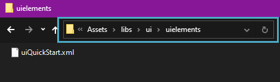
uiQuickstart.xmlBelow you can see an example of the most basic XML that must be drafted in order to be seen in Flow Graph/Schematyc (Experimental). By default, several attributes are included in the settings. The two most important sections to keep in mind beyond the file declaration are the layer attributes, and the constraints that allow you to define how content is exposed.
Layers by default define in which order the elements are drawn in case you have multiple Flash files running simultaneously and need to sort them logically. As for constraints, they allow for you to dynamically position an object to correspond to the middle of the vertical axis, horizontal axis, or both.
It is important to note that you can also change these attributes later within Flow Graph/Schematyc (Experimental) and that the values set within this file are simply a starting reference for you to work with.
<!-- Category name, of your own choosing --> <UIElements name="uiQuickStart"> <!-- Object name, again, of your own choosing --> <UIElement name="uiQuickStart" render_lockless="1"> <!-- Point it to the correct files and give it some default settings --> <GFx file="uiQuickStart.gfx" layer="0"> <Constraints> <Align mode="dynamic" valign="center" halign="center" scale="0" max="0"/> </Constraints> </GFx> </UIElement> </UIElements>
Exposing the UI Element to Visual Scripting
It is not recommended to mix the Flow Graph and Schematyc (Experimental) approaches as them sharing UI Element instances can lead to confusing results and issues that are hard to track.
Flow Graph
- Once saved, restart the Sandbox Editor and create an Empty Entity. Right-click the entity and select the Create Flow Graph option from the context menu that opens.
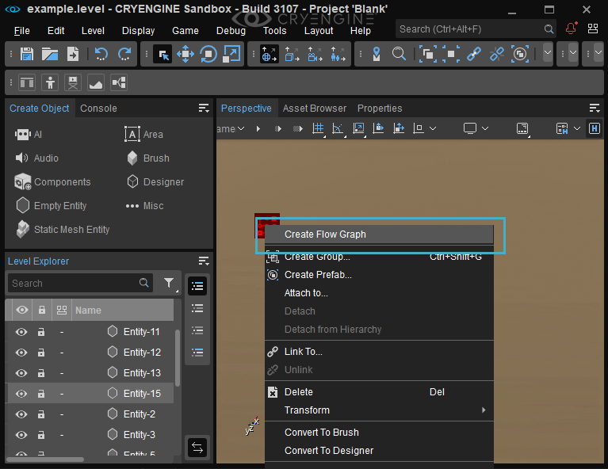
Create Flow Graph - To expose the UI element, connect a Game: Start node to the UI::Display::Display node, and then set the Element property value to uQuickStart to show on game start.
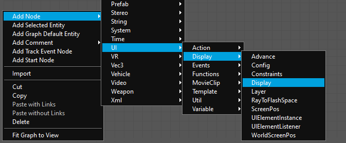
UI::Display::Display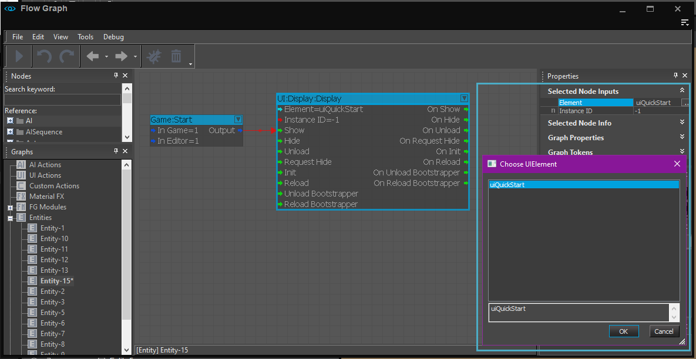
Set Element to uiQuickStart
Schematyc (Experimental)
- Once saved, restart the Sandbox Editor and create a new Schematyc Entity via the Asset Browser in a location of your choice. Name the entity "uiquickstart" and choose No in the popup dialog box that asks if you would like to use another Schematyc Entity as a base.
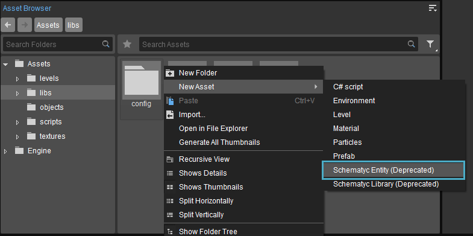
Create a new Schematyc Entity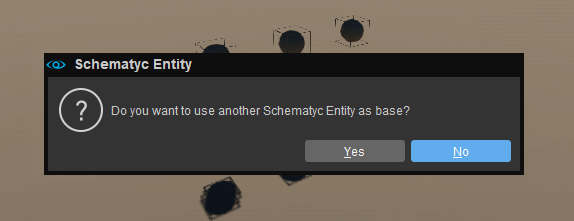
Click No on the Popup dialog - To display the UI Element, add the generated UI Element Component to your Schematyc Entity. The Component can keep the default generated name of "FlashElement:uiQuickStart".
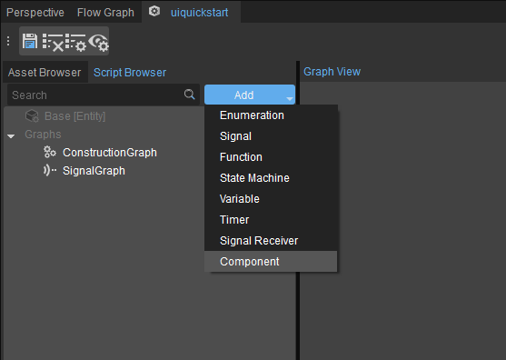
Add Component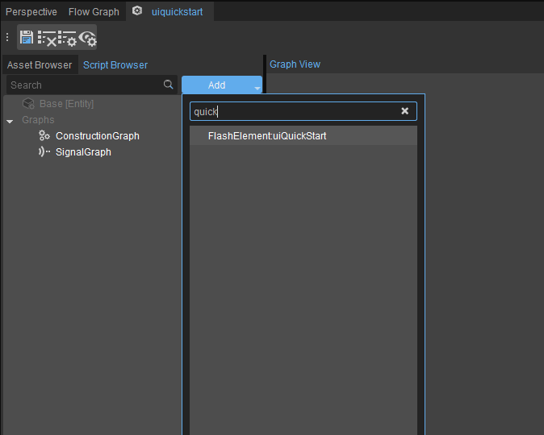
Leave the FlashElement:uiQuickStart default name - To the Signal Graph, add the Functions → Components → FlashElement:uiQuickStart → SetVisibility node.
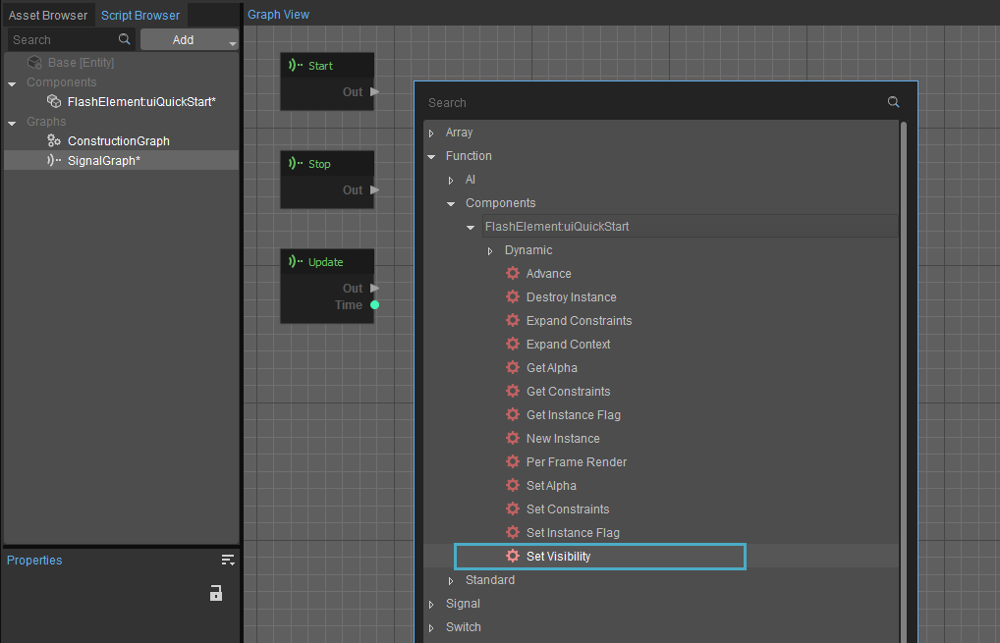
Add the SetVisibility node - Connect the Out pin of Start node to the in pin on the SetVisibility node added in the previous step; make sure the Visible property of the SetVisibility node is checked.
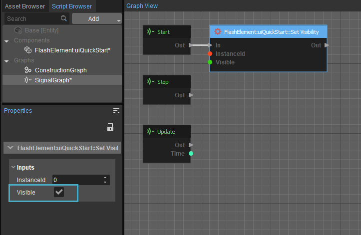
Check the SetVisibility node's Visible property - For the Schematyc (Experimental) graph to be executed, an instance of the entity needs to exist within the level. Drag the uiquickstart Schematyc Entity from Step 1 anywhere into the Perspective viewport to create an instance of it.
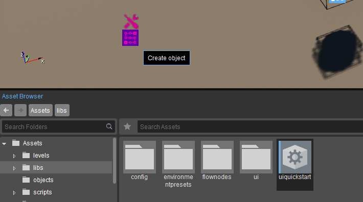
Draft the uiquickstart Schematyc Entity into the Perspective viewport
You should now be able to see your UI displayed on-screen upon entering Game mode in the Sandbox Editor.